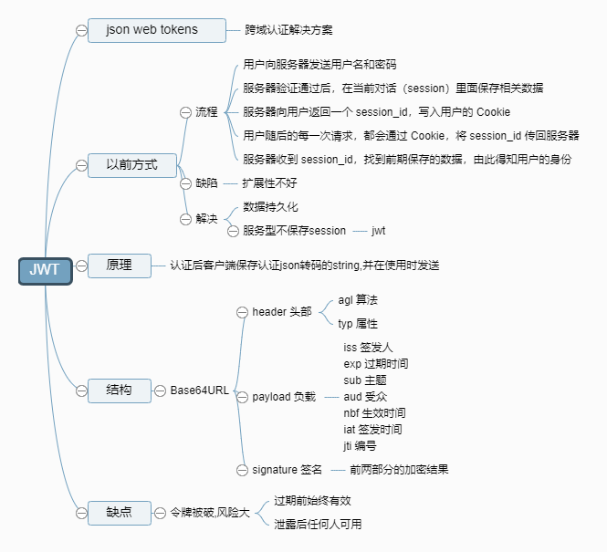
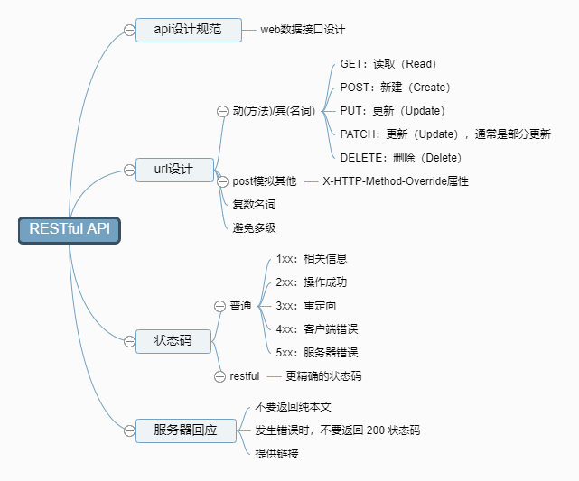
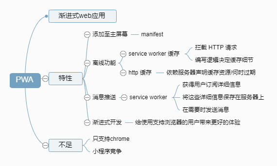

JSON Web Token（JWT）是目前最流行的跨域认证解决方案

RESTful 是目前最流行的 API 设计规范,用于 Web 数据接口的设计

Proxy 对象用于定义基本操作的自定义行为（如属性查找,赋值,枚举,函数调用等）

常见网络攻击:
XSS攻击全称跨站脚本攻击是一种在web应用中的计算机安全漏洞,它允许恶意web用户将代码植入到提供给其它用户使用的页面中
CSRF站请求伪造是一种对网站的恶意利用.CSRF通过伪装成受信任用户的请求来利用受信任的网站.CSRF攻击往往不大流行（因此对其进行防范的资源也相当稀少）和难以防范,所以被认为比XSS更具危险性

Node 之父 Ryan Dahl 发布新的开源项目 deno,从官方介绍来看,可以认为它是下一代 Node,使用 Go 语言代替 C++ 重新编写跨平台底层内核驱动,上层仍然使用 V8 引擎,最终提供一个安全的 TypeScript 运行时

PWA（Progressive web apps）运用现代的 Web API 以及传统的渐进式增强策略来创建跨平台 Web 应用程序
